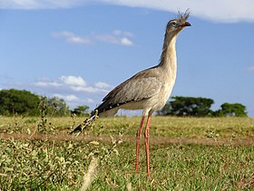
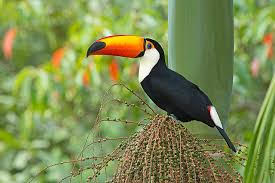
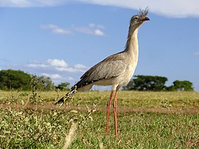
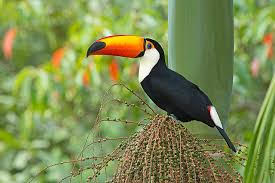

Seriema
A seriema é uma ave característica do cerrado, que também pode ser encontrada em hortos que possuem áreas abertas e gramíneas.
Tucano
Os tucanos são aves icônicas da região, conhecidos pelo seu bico longo e colorido.
Conheça as espécies que habitam os hortos do norte do Paraná
A seriema é uma ave característica do cerrado, que também pode ser encontrada em hortos que possuem áreas abertas e gramíneas.
Os tucanos são aves icônicas da região, conhecidos pelo seu bico longo e colorido.
